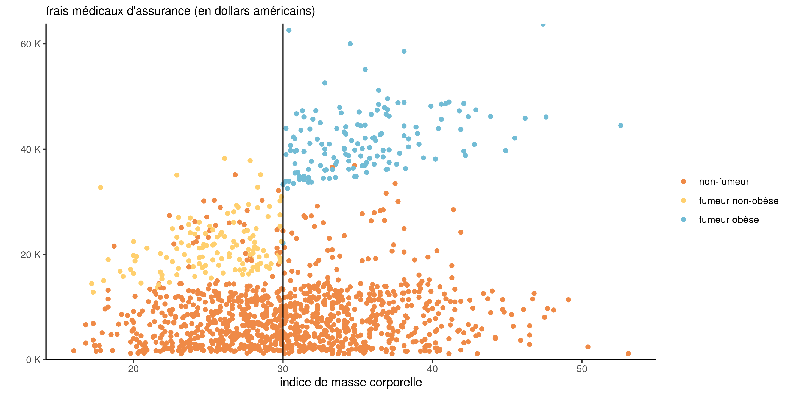
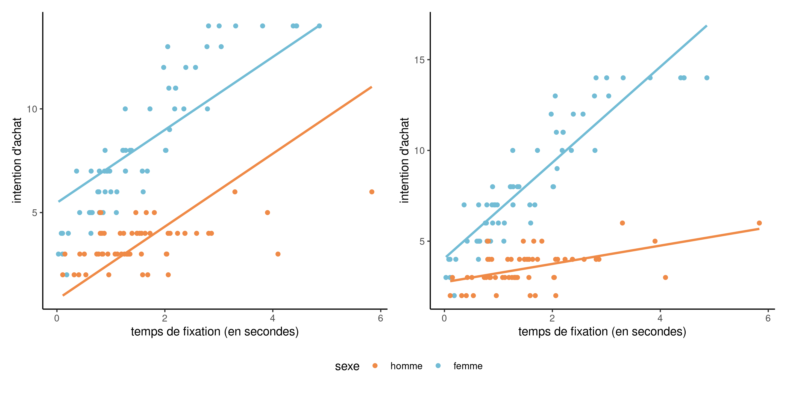
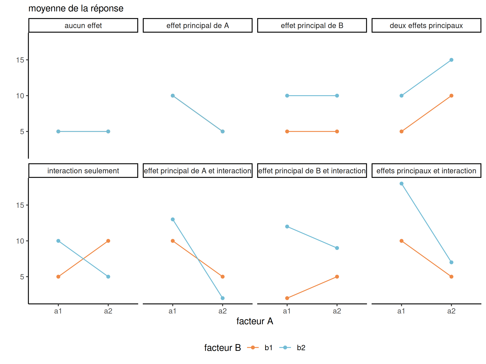
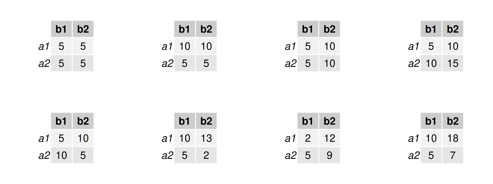
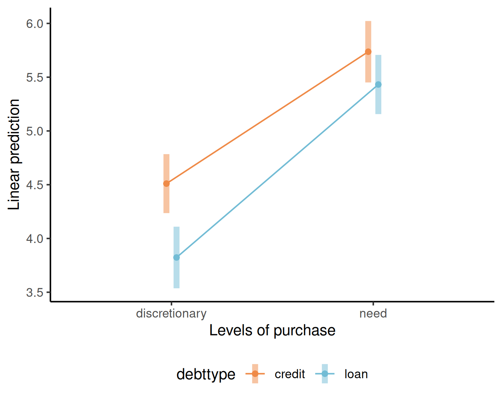
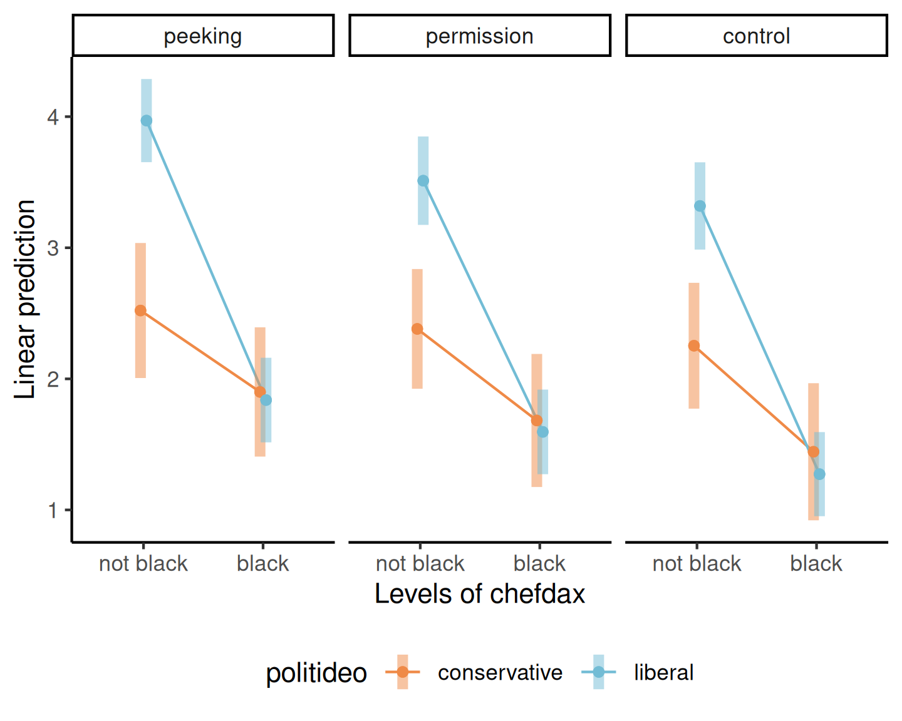

data(interaction, package = "hecmodstat")
# Pour spécifier une interaction, utiliser :
mod <- lm(intention ~ sexe + fixation + sexe:fixation,
data = interaction)
# Un raccourci est sexe*fixation, qui donne la même chose
summary(mod)$coefficients
## Estimate Std. Error t value Pr(>|t|)
## (Intercept) 2.7 0.28 9.7 1.0e-16
## sexe 1.3 0.38 3.5 7.7e-04
## fixation 0.5 0.15 3.3 1.3e-03
## sexe:fixation 2.1 0.20 10.7 5.6e-19Modélisation statistique
05. Modèles linéaires
Léo Belzile, HEC Montréal
2024
Interaction
On parle d’interaction lorsque des combinaisons de variables explicatives affectent la variable réponse différemment que lorsqu’elles sont considérées individuellement.
Si \(X_j\) et \(X_k\) interagissent, l’effet marginal de \(\mathsf{E}(Y \mid \boldsymbol{X})\) par rapport à \(X_j\) est une fonction de \(X_k\), et vice-versa.
On s’attarde au cas où au moins une des variables est catégorielle (facteur).
Primes d’assurance
Les fumeurs dont l’indice de masse corporelle (IMC) est égal ou supérieur à 30 paient une prime élevée, mais il semble que le montant de la prime augmente de façon linéaire en fonction de l’IMC. Cette tarification ne semble pas s’appliquer aux non-fumeurs.

Figure 1: Nuage de points des données assurance avec les frais en fonction de l’imc, selon le status fumeur.
Interaction entre variables continue et catégorielle
On considère un exemple avec des données bidons interaction. Le modèle additif (sans interaction) a pour moyenne \[\begin{align*}
\mathsf{E}(\texttt{intention} \mid \cdot)=\beta_0 + \beta_1 \texttt{sexe} + \beta_2 \texttt{fixation},
\end{align*}\] où \(\texttt{sexe=1}\) pour les femmes et \(\texttt{sexe=0}\) pour les hommes
L’effet de la variable continue fixation est identique pour les deux sexes.
Pour ajuster une pente différente par sexe, on crée une nouvelle variable égale au produit \(\texttt{fixation}\times\texttt{sexe}\) et on l’ajoute à notre modèle, \[\begin{align*} \mathsf{E}(\texttt{intention} \mid \cdot)= \beta_0 + \beta_1 \texttt{sexe} + \beta_2\texttt{fixation} + \beta_3 \texttt{fixation}\cdot \texttt{sexe}. \end{align*}\]
Interaction ou pas?
Figure 2: Nuages de points et droites ajustées pour un modèle sans interaction (gauche) et avec interaction (droite).
Interprétation des paramètres
Selon la valeur de \(\texttt{sexe}\), on obtient \[\begin{align*} \mathsf{E}(\texttt{intention} \mid \cdot) = \begin{cases} (\beta_0 + \beta_1) + (\beta_2 + \beta_3)\texttt{fixation}, & \texttt{sexe}=1 \text{ (femme)},\\ \beta_0 + \beta_2 \texttt{fixation}, & \texttt{sexe}=0 \text{ (homme)}. \end{cases} \end{align*}\] L’interprétation des coefficients du modèle se fait comme d’habitude avec la paramétrisation (traitement):
- \(\beta_0\) est l’intention d’achat moyenne lorsque le temps de fixation est nul pour les hommes,
- \(\beta_1\) est la différence d’ordonnée à l’origine entre les femmes et les hommes,
- \(\beta_2\) est l’augmentation unitaire de l’intention d’achat par seconde de fixation pour les hommes,
- \(\beta_3\) est la différence de pente entre les femmes et les hommes.
Tester pour une interaction
Tester la significativité de l’interaction revient à vérifier si \(\mathscr{H}_0: \beta_3=0\).
Le modèle avec interaction est significativement meilleur, ce qui signifie que l’effet du temps de fixation sur l’intention d’achat varie en fonction du sexe.
Principe de marginalité
Tous les termes d’ordre inférieurs devraient être inclus si l’interaction est présente.
Par exemple, on ne retirera pas \(\texttt{fixation}\) tout en conservant le terme d’interaction \(\texttt{fixation*sexe}\), même si on ne rejette pas \(\mathscr{H}_0:\beta_2=0\), puisqu’autrement \[\begin{align*} &\mathsf{E}(\texttt{intention} \mid \cdot) = \begin{cases} (\beta_0 + \beta_1) + \beta_3\texttt{fixation}, & \texttt{sexe}=1 \text{ (femme)},\\ \beta_0, &\texttt{sexe}=0 \text{ (homme)}; \end{cases} \end{align*}\] cela implique que l’intention d’achat est constante pour les hommes, quel que soit le temps de fixation.
Comme le choix de catégorie de référence est arbitraire, changer la variable indicatrice pour \(\texttt{0}\) pour les femmes, \(\texttt{1}\) pour les hommes, donnerait un autre modèle et potentiellement des inférences différentes.
Interaction catégoriel vs catégoriel
Considérons un modèle linéaire avec les facteurs \(A\), \(B\) et leur interaction. C’est un modèle d’analyse de variance à deux facteurs, dans lequel chaque sous-groupe \((a_i, b_j)\) a sa propre moyenne \(\mu_{ij}\). Par exemple, si \(A\) a \(n_a=3\) niveaux et \(B\) a \(n_b=2\) niveaux.
| \(\qquad B\) \(A\) \(\qquad\) |
\(b_1\) | \(b_2\) | \(\text{ligne}\) |
|---|---|---|---|
| \(a_1\) | \(\mu_{11}\) | \(\mu_{12}\) | \(\mu_{1.}\) |
| \(a_2\) | \(\mu_{21}\) | \(\mu_{22}\) | \(\mu_{2.}\) |
| \(a_3\) | \(\mu_{31}\) | \(\mu_{32}\) | \(\mu_{3.}\) |
| \(\text{colonne}\) | \(\mu_{.1}\) | \(\mu_{.2}\) | \(\mu\) |
- Les estimations empiriques des cellules sont obtenues en remplaçant \(\mu_{ij}\) par la moyenne des sous-groupes.
- Les moyennes de lignes \(\mu_{i.}\), de colonnes \(\mu_{.j}\) et globale \(\mu\) sont les moyennes équipondérées des éléments des cellules \(\mu_{ij}\).
Exemple 1 - perception d’un emprunt
Sharma, Tully, et Cryder (2021) ajuste un modèle factoriel 2 par 2 inter-sujets (ANOVA à deux facteurs) en variant
- le type de dette (
debttype), selon que l’argent est un prêt (loan) ou un crédit (credit) - le type d’achat auquel l’argent sert, soit dépense discrétionnaire (
discretionary) ou pour des besoins essentiels (need).
La variable réponse est la vraisemblance moyenne, mesurée à l’échelle d’une échelle de Likert à 9 points allant de 1 à 9.
Exemple 2 - perception d’appropriation culturelle par idéologie politique
On considère un modèle d’ANOVA à trois facteurs de Lin et al. (2024). Leur étude 4 s’intéresse à l’appropriation culturelle pour une recette de soul food, un courant afro-américain, parue dans le livre du “Chef Dax”.
Les auteurs manipulent l’ethnicité du chef, afro-Américain ou pas, et la façon dont la recette a été obtenue (furtivement, en demandant la permission ou sans mention dans le cas du groupe contrôle).
Les auteurs ont postulé que la perception de l’appropriation varie selon l’idéologie politique. L’étude utilise un devis expérimental \(3 \times 2 \times 2\).
Diagramme des interactions
Le diagramme des interactions présente les moyennes des sous-groupes (avec intervalles de confiance) en fonction des facteurs. Si les lignes sont parallèles, il n’y a pas d’interaction.
Figure 3: Diagramme d’interactions pour un devis 2 par 2. Image adaptée de la Figure 10.2 de Crump, Navarro et Suzuki (2019) par Matthew Crump (CC BY-SA 4.0 license)
Moyennes de cellules pour 2 par 2
Les scénarios sont les mêmes que sur la diapositive précédente
Table 1: Moyennes de sous-groupes pour les combinaisons dans un devis 2 par 2.
Diagramme d’interaction pour l’exemple 1
L’étude supplémentaire 5 de Sharma, Tully, et Cryder (2021) est une ANOVA inter-sujets \(2 \times 2\) (sans mesure répété par individu), avec facteurs
- type de dette (
debttype), soit prêt (loan) ou crédit (credit) - type d’achat (
purchase), soit discrétionnaire (discretionary) ou pas (need)

Aucune preuve visuelle d’une interaction
Diagramme d’interaction pour l’exemple 2
L’étude 4 de Lin et al. (2024) utilise un devis \(3 \times 2 \times 2\) inter-sujet pour étudier la perception d’’appropriation culturelle, avec
- L’ethnicité du
chefdax: soit noir (black) ou pas (not black). - l’idéologie politique,
politideo: soitconservativeouliberal - la façon dont les recettes ont été obtenues (
brandaction): furtivement, avec la permission, ou sans mention (groupe contrôle).

Interaction entre chefdax (ethnicité) et ideology.
Tableau d’analyse de variance
Le modèle d’analyse de variance compare les modèles avec (ou sans) \(A\), \(B\), et l’interaction \(AB\).
Si l’échantillon est balancé (même nombre d’observations pour chaque sous-groupe), il existe une décomposition unique de la variabilité
\[\underset{\text{total}}{\mathsf{SC}_{c}} = \underset{\text{facteu $A$}}{\mathsf{SC}_A} + \underset{\text{facteur $B$}}{\mathsf{SC}_B} + \underset{\text{interaction}}{\mathsf{SC}_{AB}} + \underset{\text{résidus}}{\mathsf{SC}_e}\] Ainsi,
- un modèle sans \(AB\) aurait pour somme du carré des résidus \(\mathsf{SC}_{AB} + \mathsf{SC}_e\), avec \(n_a-1\) paramètres en moins.
- un modèle sans \(A\) (seulement le facteur \(B\)) aurait pour somme du carré des résidus de \(\mathsf{SC}_{A} + \mathsf{SC}_{AB} + \mathsf{SC}_e\), versus \(\mathsf{SC}_{AB} + \mathsf{SC}_e\) sous l’alternative.
- la différence dans la somme des carrés est \(\mathsf{SC}_A\) pour \(A\), \(\mathsf{SC}_{AB}\) pour l’interaction \(A \times B\), etc.
Statistiques de test pour ANOVA
Si le modèle alternatif a \(n_an_b\) paramètres pour la moyenne, et que nous imposons \(n_a-1\) restrictions linéaires sous l’hypothèse nulle au modèle estimé sur la base de \(n\) observations indépendantes, la statistique de test \(F\) est \[\begin{align*} F = \frac{\mathsf{SC}_A/(n_a-1)}{\mathsf{SC}_{e}/ (n-n_an_b)} \end{align*}\]
- Le numérateur est la différence de sommes des carrés, notée \(\mathsf{SC}_A\), entre les modèles ajustés selon \(\mathscr{H}_0\) et \(\mathscr{H}_a\), divisée par les degrés de liberté \(n_a-1\) (différence du nombre de paramètres).
- Le dénominateur est \(S^2\), l’estimateur sans biais de la variance.
Tableau d’analyse de variance
| terme | degrés de liberté | carrés moyens | \(F\) |
|---|---|---|---|
| \(A\) | \(n_a-1\) | \(\mathsf{MS}_{A}=\mathsf{SC}_A/(n_a-1)\) | \(\mathsf{MS}_{A}/\mathsf{MS}_{\text{res}}\) |
| \(B\) | \(n_b-1\) | \(\mathsf{MS}_{B}=\mathsf{SC}_B/(n_b-1)\) | \(\mathsf{MS}_{B}/\mathsf{MS}_{\text{res}}\) |
| \(AB\) | \((n_a-1)(n_b-1)\) | \(\mathsf{MS}_{AB}=\mathsf{SC}_{AB}/\{(n_a-1)(n_b-1)\}\) | \(\mathsf{MS}_{AB}/\mathsf{MS}_{\text{res}}\) |
| résidus | \(n-n_an_b\) | \(\mathsf{MS}_{\text{res}}=\mathsf{SC}_{e}/ (n-ab)\) | |
| total | \(n-1\) |
Lire le tableau de bas en haut (en débutant avec l’interaction).
Comparaison de modèles emboîtés avec des données débalancées
Selon la décomposition, on compare des modèles différents!
| type I | type II | type III | |
|---|---|---|---|
| \(\boldsymbol{A}\) | intercept vs \(A\) | \(B\) vs \((A,B)\) | \((B, AB)\) vs \((A,B, AB)\) |
| \(\boldsymbol{B}\) | \(A\) vs \((A,B)\) | \(A\) vs \((A,B)\) | \((A, AB)\) vs \((A,B,AB)\) |
| \(\boldsymbol{AB}\) | \((A,B)\) vs \((A,B,AB)\) | \((A,B)\) vs \((A,B,AB)\) | \((A,B)\) vs \((A,B,AB)\) |
Utilisez la décomposition type 2 de la somme des carrés par défaut (avec car::Anova). La décomposition de type 1 (anova) dépend de l’ordre des termes, tandis que le type 3 ne respecte pas le principe de marginalité.
Modèle pour l’exemple 1
La moyenne du modèle linéaire avec interaction (paramétrisation en terme de traitements) est \[\begin{align*} \mathsf{E}(\texttt{likelihood} \mid \cdot) &= \beta_0 + \beta_1\mathbf{1}_{\texttt{purchase=need}} + \beta_2\mathbf{1}_{\texttt{debttype=loan}} \\&\quad+ \beta_3\mathbf{1}_{\texttt{purchase=need}}\mathbf{1}_{\texttt{debttype=loan}} \end{align*}\]
On peut calculer la moyenne de chaque groupe et déduire l’interprétation des coefficients:
- \(\mu_1 = \beta_0\) pour
purchase=discretionnaryetdebttype=credit - \(\mu_2 = \beta_0 + \beta_1\) pour
purchase=needetdebttype=credit - \(\mu_1 = \beta_0 + \beta_2\) pour
purchase=discretionnaryetdebttype=loan - \(\mu_2 = \beta_0 + \beta_1 + \beta_2 + \beta_3\) pour
purchase=needetdebttype=loan
Ainsi, \(\beta_3\) représente la différence des moyennes \(\mu_1 + \mu_4 - \mu_2 - \mu_3\).
Ajustement de l’ANOVA et moyennes de groupes
# Données de l'étude supp. 5
# de Sharma, Tully, et Cryder (2021)
data(STC21_SS5, package = "hecedsm")
# La fonction 'aov' sert à ajuste des ANOVA
# Équivalent à "lm" avec variables catégorielles, contrasts somme nulle
mod1 <- aov(likelihood ~ purchase*debttype,
data = STC21_SS5)
# Calculer le décompte par sous-catégorie (données débalancées)
xtabs(~purchase + debttype, data = STC21_SS5)
## debttype
## purchase credit loan
## discretionary 392 359
## need 361 389
# Calcul de la moyenne globale/lignes/colonnes/cellules
means <- model.tables(mod1, type = "means")Comparaison de modèles
car::Anova(mod1, type = 2)
## Anova Table (Type II tests)
##
## Response: likelihood
## Sum Sq Df F value Pr(>F)
## purchase 752 1 98.21 < 2e-16 ***
## debttype 92 1 12.04 0.00054 ***
## purchase:debttype 14 1 1.79 0.18171
## Residuals 11467 1497
## ---
## Signif. codes: 0 '***' 0.001 '**' 0.01 '*' 0.05 '.' 0.1 ' ' 1Dans le tableau, on se concentre uniquement sur la ligne purchase:debttype.
La statistique \(F\) vaut 0.28; avec la loi nulle \(\mathsf{Fisher}\) (2, 1), la valeur-\(p\) est 0.76. Il n’y a pas d’effet du type d’achat sur la dette.
Effets principaux et marginalisation
Les effets principaux représentent les moyennes des lignes ou des colonnes.
On les obtient par voie de marginalisation, en prenant la moyenne sur les autres facteurs.
Les effets principaux sont trompeurs s’il y a une interaction.
Par exemple, les effets principaux de \(A\) sont:
| \(A\) | \(\text{moyenne de ligne}\) |
|---|---|
| \(a_1\) | \(\mu_{1.}\) |
| \(a_2\) | \(\mu_{2.}\) |
| \(a_3\) | \(\mu_{3.}\) |
Effets simples
En présence d’interactions, l’effet de \(A\) dépend de la valeur de \(B\).
Les effets simples sont des moyennes de cellules dans une ligne ou une colonne donnée.
| \(A\) | \(b_1\) |
|---|---|
| \(a_1\) | \(\mu_{11}\) |
| \(a_2\) | \(\mu_{21}\) |
| \(a_3\) | \(\mu_{31}\) |
Exemple d’effets principaux
Puisque l’interaction de l’exemple 1 n’est pas significative, on peut interpréter l’effet principal de debttype et comparer les deux types de dettes (différence de moyenne).
# Comparaison entre paires pour le type de dette
# Effets principaux (on calcule la moyenne en ignorant "purchase")
emmeans::emmeans(mod1,
# 'specs': quelle(s) variable(s) conserver
specs = "debttype",
contr = "pairwise")
## $emmeans
## debttype emmean SE df lower.CL upper.CL
## credit 5.1 0.101 1497 4.9 5.3
## loan 4.6 0.101 1497 4.4 4.8
##
## Results are averaged over the levels of: purchase
## Confidence level used: 0.95
##
## $contrasts
## contrast estimate SE df t.ratio p.value
## credit - loan 0.5 0.143 1497 3.500 0.0005
##
## Results are averaged over the levels of: purchaseTableau d’analyse de variance pour l’exemple 2
Pour l’ANOVA à \(K\) facteurs, nous commençons toujours par estimer le modèle complet avec toutes les interactions possibles (à condition qu’il y ait suffisamment de données pour estimer ces dernières, et donc des répétitions).
| terme | somme de carrés | ddl | stat | valeur-p |
|---|---|---|---|---|
| politideo | 48.49 | 1 | 21.35 | <0.001 |
| chefdax | 473.72 | 1 | 208.61 | <0.001 |
| brandaction | 34.24 | 2 | 7.54 | <0.001 |
| politideo:chefdax | 65.00 | 1 | 28.63 | <0.001 |
| politideo:brandaction | 1.56 | 2 | 0.34 | 0.71 |
| chefdax:brandaction | 0.62 | 2 | 0.14 | 0.87 |
| politideo:chefdax:brandaction | 0.66 | 2 | 0.15 | 0.86 |
| Residuals | 1587.33 | 699 |
Il n’y a pas d’interaction d’ordre 3, et la seule interaction d’ordre 2 est entre l’idéologie politique et l’ethnicité du Chef Dax. On ne peut pas interpréter la valeur-\(p\) de l’effet principal de brandaction, mais on pourrait considérer les moyennes marginales.
Réduction de la dimension et effets simples
On réduit le problème à une ANOVA à deux facteurs \(2 \times 2\), en marginalisant sur brandaction.
# Moyenne marginales pour idéologie politique/ethnicité
# On calcule les effets simples de ethnicité, pour chaque idéologie politique
(emm2a <- emmeans(mod2,
by = "chefdax",
specs = "politideo"))
## chefdax = not black:
## politideo emmean SE df lower.CL upper.CL
## conservative 2.4 0.142 699 2.1 2.7
## liberal 3.6 0.097 699 3.4 3.8
##
## chefdax = black:
## politideo emmean SE df lower.CL upper.CL
## conservative 1.7 0.149 699 1.4 2.0
## liberal 1.6 0.095 699 1.4 1.8
##
## Results are averaged over the levels of: brandaction
## Confidence level used: 0.95Contrastes deux à deux ethnicité par idéologie politique
emm2a |> contrast(method = "pairwise")
## chefdax = not black:
## contrast estimate SE df t.ratio p.value
## conservative - liberal -1.22 0.172 699 -7.100 <.0001
##
## chefdax = black:
## contrast estimate SE df t.ratio p.value
## conservative - liberal 0.11 0.177 699 0.600 0.5500
##
## Results are averaged over the levels of: brandactionNous constatons que les libéraux sont beaucoup plus susceptibles de considérer le livre de cuisine du chef Dax comme un exemple d’appropriation culturelle s’il n’est pas noir; il y a peu de preuves d’une différence entre les conservateurs et les libéraux lorsque le chef Dax est noir.
On peut calculer les effets marginaux pour idéologie (afro-Américain ou pas). Les deux différences sont statistiquement significatives, mais la différence est beaucoup plus marquée pour les répondants de gauche.
Comparaison des effets de la méthode d’acquisition.
Nous pensons que les participants verront le fait de copier furtivement moins favorablement que si le chef Dax demandait l’autorisation de publier la recette. Il est difficile de connaître l’effet du groupe contrôle, car nous n’omettons cette mention dans ce dernier.
# Moyenne marginale de brandaction
(emm_brand <- emmeans(mod, specs = c("brandaction")))
## brandaction emmean SE df lower.CL upper.CL
## peeking 2.56 0.108 699 2.35 2.77
## permission 2.29 0.105 699 2.09 2.50
## control 2.07 0.108 699 1.86 2.28
##
## Results are averaged over the levels of: politideo, chefdax
## Confidence level used: 0.95
# Test F pour les effets principaux de brandaction
emm_brand |>
contrast(method = "pairwise")|>
joint_tests()
## model term df1 df2 F.ratio p.value
## contrast 2 699 5.100 0.0064Le test \(F\) permet de comparer le modèle avec une moyenne globale pour brandaction vs une par catégorie. Le test indique qu’au moins une des paires est différente des autres.
Contrastes
On peut voir une analyse de variance à plusieurs facteurs comme un modèle d’analyse de variance à un facteur possédant \(n_a \times n_b \times \cdots\) niveaux, un par sous-groupe.
Les effets marginaux, les interactions et les effets simples sont tous des exemples de contrastes linéaires.
Récapitulatif 1
- Les interactions se produisent lorsque l’effet d’une variable dépend d’une autre: nous modélisons généralement cela en ajoutant le produit des deux (une ou plusieurs étant catégoriques avec des indicateurs binaires).
- Les diagrammes d’interaction, qui montrent les moyennes des groupes, sont utiles d’un point de vue conceptuel pour la visualisation, mais des tests formels sont nécessaires.
- Les tests statistiques prennent en compte l’élimination des interactions sur la base de l’ajustement du modèle complet (lorsque cela est possible).
- Le principe de marginalité implique que nous conservons tous les termes d’ordre inférieur: utiliser les effets de type II.
Récapitulatif 2
- Les modèles d’analyse de la variance sont simplement des modèles de régression linéaire avec des explications catégorielles.
- Les modèles avec toutes les interactions correspondent à un modèle où chaque sous-groupe a sa propre moyenne.
- Nous comparons les effets principaux (en l’absence d’interactions) ou les effets simples (lorsqu’ils sont présents), ou des contrastes plus généraux, sur la base du modèle complet.
- Une ANOVA à plusieurs facteurs peut toujours être considérée comme une ANOVA à un facteur.
Références

Lin, Jason D, Nicole You Jeung Kim, Esther Uduehi, et Anat Keinan. 2024. « Culture for Sale: Unpacking Consumer Perceptions of Cultural Appropriation ». Journal of Consumer Research. https://doi.org/10.1093/jcr/ucad076.
Sharma, Eesha, Stephanie Tully, et Cynthia Cryder. 2021. « Psychological Ownership of (Borrowed) Money ». Journal of Marketing Research 58 (3): 497‑514. https://doi.org/10.1177/0022243721993816.